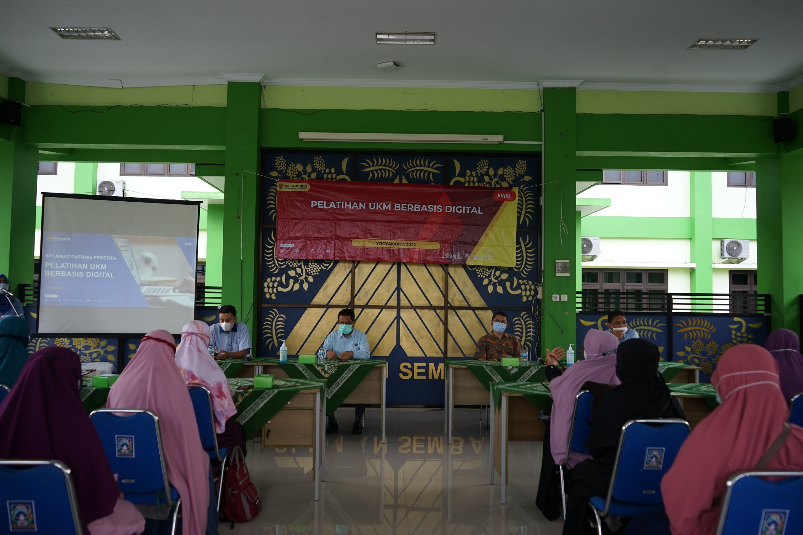

| Beranda | Profil | Program & Kegiatan | Informasi | Berita | Galeri | Layanan | Kontak |
BERITA |
|
 Dinas Kominfo DIY Selanggarakan Pelatihan UKM Bebasis Digital di Kapanewon Minggir |
Rakor E-Lapor Pemda DIY "Fast Respond,fast Solution Trusted Complain Handling System" |
Dinas Komunikasi dan Informatika DIY Selenggarakan Sosialisasi Sistem Pemerintahan Berbasis Elektronik (SPBE) di Lingkungan Pemda DIY |
KATEGORI BERITA
|